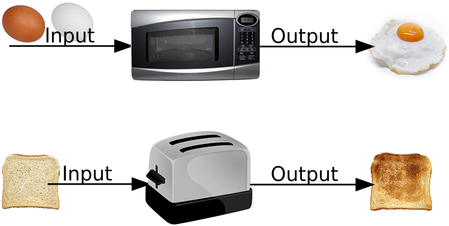
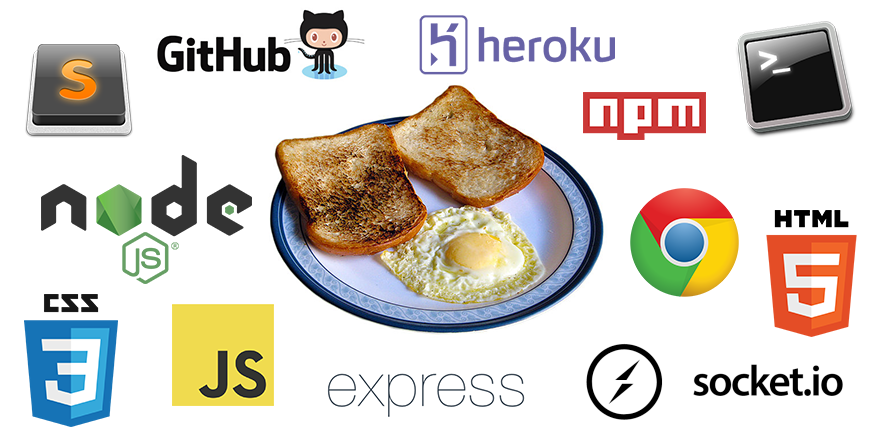
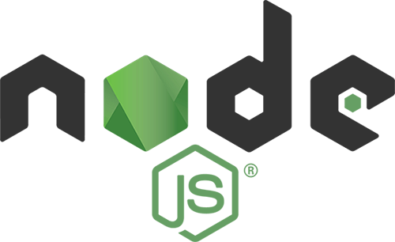
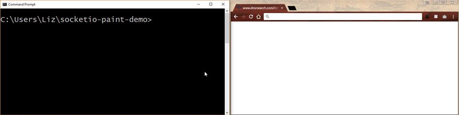
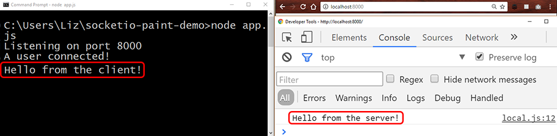
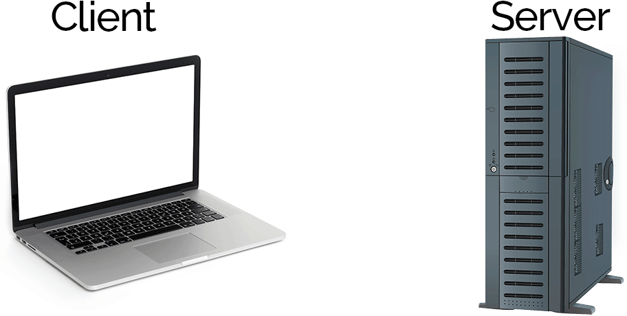
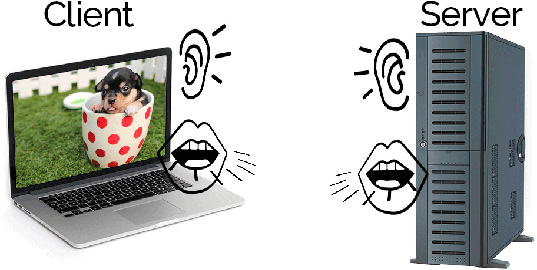
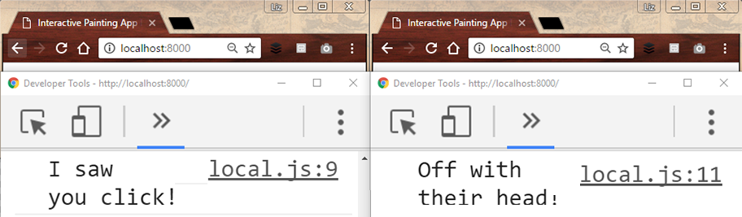
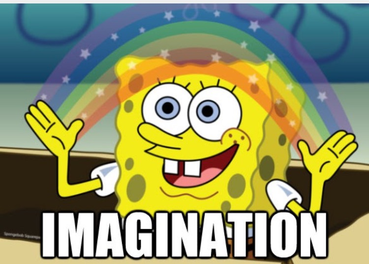

Build Your First Real-Time Interactive Web App
with NodeJS, Express & SocketIO
Click and drag to draw on this collaborative canvas:
First, a quick note:
Learning with Black Boxes
Anything can be a black box
Photos of bread/toast by Rainer Zenz
{kind=link}
The Black Box Paradox
Blackboxing is "the way scientific and technical work is made invisible by its own success.
When a machine runs efficiently, when a matter of fact is settled, one need focus only on its inputs and outputs and not on its internal complexity.
Thus, paradoxically, the more science and technology succeed, the more opaque and obscure they become."
-- Bruno Latour
Tools we're using today
Even if you don't completely understand how all these tools work yet, you can still use them to make a delicious breakfast a cool web app!
Delicious breakfast photo by Asimzb on Wikimedia
{kind=link}
Tools we're using today
Languages:
Software Tools:
NodeJS
A runtime environment that lets you run JavaScript on the server, outside of the web browser. It comes with command line tools, including npm.
npm
The default NodeJS package manager, a command line tool and online service that makes it easy to use JavaScript libraries and share your own.
Express
The most popular NodeJS framework. Express provides functions that make it easier to create web applications.
SocketIO
A JavaScript library (both client-side and server-side) that makes it easier to use WebSocket for real-time communication.
WebSocket
The real star of today's show! The underlying protocol and web API that allows for fast, bidirectional communication between clients and servers.
OK, enough talk. Let's dive right in!
Step 1: Start a local web server and run the sample code
Let's take a look at our project files:
Inside "socketio-paint-demo" folder:
- package.json
- app.js
- node_modules/
- public/
- index.html
- local.js
- style.css
Open up both of these files in your text editor:
Server Side
app.js
Client Side
public/local.js
app.js
Boilerplate code (full of black boxes!) to start our server:
var express = require('express'); // The require() function includes the code for Express
var app = express(); // Initialize the Express library
var http = require('http').Server(app); // Initialize an HTTP server
var io = require('socket.io')(http); // Include and initialize SocketIO
var port = process.env.PORT || 8000; // Set the default port number to 8000, or use Heroku's settings (process.env.PORT)
app.use(express.static('public')); // Tell Express to serve everything in the "public" folder as static files
http.listen(port, function() { // Activate the server and listen on our specified port number
console.log('Listening on port ' + port); // Display this message in the console once the server is active
});
io.on('connection', function(socket) { // When a user connects over websocket:
console.log('A user connected!'); // Display this message in the console
});
local.js
Client code to connect to our server over WebSocket:
// Start a WebSocket connection with the server using SocketIO
var socket = io();
// Note that the SocketIO client-side library was imported on line 13 of index.html,
// and this file (local.js) was imported on line 14 of index.html
Let's run our app!
- Open up the command line (Command Prompt in Windows, Terminal in Mac)
- Make sure you're in the project folder with the sample code. Remember you can type cd followed by a space in the command line, then drag your project folder onto the command line. Hit enter to run the command and go into your folder.
- Finally, type node app.js into the command line and hit enter to run your app!
This tells NodeJS to run your "app.js" file, which starts the web server and puts everything into motion.
If it works, you'll see a message in the command line that it's listening on port 8000
Open the app in your web browser
To connect to your local web server, open a new tab in your web browser and go to the following URL:
http://localhost:8000You'll see a blank page -- that's good!
Now check the command line:
If the connection is working, it will show the message "A user connected!"
How to restart your web server
In command line, press Ctrl + C and then run node app.js again.
Every time you change your code, you have to restart the server. And don't forget to refresh your browser after every change too!
Step 2: Send and receive data between client and server
app.js
Sending and receiving data on the server
// When a user connects over websocket,
io.on('connection', function(socket) {
// Display this message in the server console
console.log('A user connected!');
// Send an event named "test" to every client with io.sockets.emit() function (or just io.emit() for short)
// and with this event, send the string 'Hey everyone...' as the data
io.sockets.emit('test', 'Hello from the server!');
// When the server receives an event named "test",
socket.on('test', function(data) {
// Take whatever data was received and display it in the server console
console.log(data);
});
}); // End of SocketIO code
local.js
Sending and receiving data on the client
// Start a WebSocket connection with the server using SocketIO
var socket = io();
// Send an event named "test" to the server with socket.emit() function
// and with this event, send the string 'Hi, this is...' as the data
socket.emit('test', 'Hello from the client!');
// When the client receives an event named "test",
socket.on('test', function(data) {
// Take whatever data was received and display it in the client console
console.log(data);
});
Now we'll be using two consoles!
Server Side Console:
Command Line
Client Side Console:
Web Browser
Save the changes, restart the app,
and open up both consoles
Remember to:
- Press Ctrl + C in command line to turn off the server
- Run node app.js in command line to turn the server on again
- And don't forget to refresh your web browser!
You should see something like this:
Congratulations!
You now have a real-time web app!
"Uh, OK... That wasn't too exciting."
"What's so special about this whole
WebSocket thing, anyway?"
Let's talk about protocols
HTTP vs WebSocket
HTTP's request-response model is great for getting lots of information at once, but not so great for having a conversation.
WebSocket is better for conversations; both the client and the server can send and receive information all at the same time.
 "Listen" icon by Rémy Médard, "Speak" icon by Eðvarð Atli Birgisson, from the Noun ProjectHTTP:
- Messages go in one direction at a time (sending or receiving)
- More overhead to send with each message
- Pull model (only the client can initiate)
- Uses http://... URI scheme
WebSocket:
- Messages sent and recieved simultaneously (full duplex)
- Very little overhead for messages once connection is established
- Bidirectional (server can push data on its own)
- Uses ws://... URI scheme
Enough talk.
Let's get back to the code!
Challenge 1: Send objects instead of strings
Locate the second parameter of the socket.emit function in both JS files.
Replace those strings with objects containing two properties: who sent the message ("server" or "client") and a random number.
Hint: a JavaScript object looks like this:
{property: value, anotherProperty: anotherValue}
Time's up! That was just a quick warm-up.
Solution to Challenge 1
app.js
Previous code (change the highlighted section)
io.on('connection', function(socket) {
console.log('A user connected!');
io.sockets.emit('test', 'Hello from the server!');
socket.on('test', function(data) {
console.log(data);
});
});
Solution to challenge 1
io.on('connection', function(socket) {
console.log('A user connected!');
io.sockets.emit('test', {sender: 'server', randomNumber: 5});
socket.on('test', function(data) {
console.log(data);
});
});
local.js
Previous code (change the highlighted section)
var socket = io();
socket.emit('test', 'Hello from the client!');
socket.on('test', function(data) {
console.log(data);
});
Solution to challenge 1
var socket = io();
socket.emit('test', {sender: 'client', randomNumber: 99});
socket.on('test', function(data) {
console.log(data);
});
So what did we just do? How does that code work?
First, let's look at the bigger picture:
Event-Based Programming
Procedural Code
- Code runs when you start the program
- Predictable, runs in the same order every time
- Common in beginner tutorials, probably what you're used to
Event-Based Code
- Code runs when an event triggers it (like user input)
- Can't predict when code will run or in what order
- Probably new to you, and it will feel a bit weird!
The Event Loop
The event loop is literally an infinite loop running in the background, checking if any events have happened and running your at the right time.
There's one built into NodeJS and there's one built into your web browser!
See this great video for details on the event loop in JavaScript.
Event-based programming is everywhere!
Anywhere you deal with user input, you'll see event-based programming.
It's big in NodeJS, SocketIO, and even in basic client-side JavaScript.
There are lots of events built into JavaScript
See the MDN event reference page for a gigantic list!
In fact, let's open that link right now and keep it handy for later!
You can also create your own events
We'll be making our own custom SocketIO events today.
You can also make custom events in plain JavaScript; see the MDN guide on creating events for more info.
Events can trigger other events
You can create chain reactions in your code, not unlike a row of dominoes!
But sometimes it's hard to get it working
Event-based programming can be harder to learn and harder to debug,
so be prepared for some frustration.
Let's look at some code!
JavaScript Events in Action
Breakdown of the JavaScript Event Listener
document.addEventListener('click', myFunction); function myFunction(event) { console.log(event); }
There are five parts to a standard JavaScript event listener
Part 1: Where the events will happen
(in this case, the whole HTML document object)
Part 2: Start listening for events
(with JavaScript's built-in addEventListener method)
Part 3: The type of event
(see this reference list or make up your own)
Part 4: The name of the function to run when the event happens
(known as the "callback" function)
Part 5: This parameter receives an object with info about the event
(different events give you different information)
Anonymous functions work too
document.addEventListener('click', function(event) {
console.log(event);
});
Just note that if you ever need to remove an event listener later, it won't work with an anonymous function.
Let's test it out, shall we?
- Copy-paste the code below into local.js (after your existing code)
- Restart your app (Remember: Ctrl + C, "node app.js", refresh the browser)
- Click somewhere inside your blank web page (after refreshing the page!)
- And then check your browser console
document.addEventListener('click', function(event) {
console.log(event);
});
Behold! Event data!
You should see a MouseEvent object in the console. Click to expand the data:

Next up: Events in SocketIO
You already know how to use them!
Breakdown of the SocketIO Event Listener
socket.on('my event', myFunction); function myFunction(data) { console.log(data); }
The SocketIO event listener also has five parts, and it works the same way!
Part 1: Where the events will happen
(in this case, the socket object representing the WebSocket connection)
Part 2: Start listening for events
(with SocketIO's "on" method)
Part 3: The type of event
(here we made up our own and gave it a random name)
Part 4: The name of the function to run when the event happens
(known as the "callback" function)
Part 5: Data sent from the other side of the WebSocket connection
(it could be an object, a string, or whatever else)
Anonymous functions also work with SocketIO
socket.on('my event', function(data) {
console.log(data);
});
Just like with JavaScript's built-in listeners, if you ever need to remove a SocketIO listener later, it won't work with an anonymous function.
Our SocketIO Functions So Far
Server:
- socket.on - Listen for events
- io.sockets.emit - Send event to every connected client
Client:
- socket.on - Listen for events
- socket.emit - Send event to server
Challenge 2: Combine user input events with SocketIO events
Change your code so that when the user clicks the screen, you use console.log to display the event info object and you also send it to the server.
Hint: you only need to change the code in one spot in local.js
Time's up!
Solution to Challenge 2
local.js
Solution to challenge 2
var socket = io();
document.addEventListener('click', function(event) {
console.log(event);
socket.emit('test', event);
});
socket.on('test', function(data) {
console.log(data);
});
Next up: The SocketIO Event Emitter
This is how we send (or emit) events
Breakdown of the SocketIO Event Emitter
socket.emit('my event', myData);
The SocketIO event emitter sends events and data to the client or server.
It has three parts.
Part 1: The SocketIO object and emitter function
(there are three variations, which we'll look at in the next slide)
Part 2: The event to send
(a string value of our choosing)
Part 3: The data to send with the event
(as we've seen, it can be an object, a string, or whatever)
SocketIO Emit Functions
Server:
- socket.emit - Send event to one particular client
- socket.broadcast.emit - Send event to every client except for one particular client
- io.sockets.emit - Send event to every connected client
Client:
- socket.emit - Send event to server
Simulating multiple clients locally
For the next challenge, you'll need to open at least two instances of your app, each with its own web console, to test your app with multiple clients.
You can use two browser tabs or make two separate windows side-by-side.
Challenge 3: Reply to users with new SocketIO functions
Change your server-side code so that when the server receives
the event named "test",
it does two more things:
1. It replies to the client who clicked their screen with an event called "test" containing the message "I saw you click!"
2. It also replies to every client except the one who clicked with an event called "test" containing the message "Off with their head!"
Hint: to test this code, you need to open up multiple browser windows/tabs,
with multiple browser consoles open!
Time's up!
Solution to Challenge 3
app.js
Solution to challenge 3
io.on('connection', function(socket) {
console.log('A user connected!');
io.sockets.emit('test', 'Hello from the server!');
socket.on('test', function(data) {
console.log(data);
socket.emit('test', 'I saw you click!');
socket.broadcast.emit('test', 'Off with their head!');
});
});
Congratulations, coding ninja!
Now you know 90% of SocketIO!
So the only limit is your imagination!
With just those few SocketIO functions and some client-side JavaScript, you can create any and every type of real-time, multi-user interaction.
Now, back to our painting app!
How Our Painting App Works
- We all open a WebSocket connection with my web server.
- I click/move my mouse, and my web browser draws a line.
- As I draw, my browser sends data to the server.
- The server sends the data to everyone except me.
- Your browsers draw lines based on the data.
- Rinse and repeat, with all of us drawing together!
The last pieces of the puzzle:
- How to detect mouse movements (when users click and drag their mouse and when they let go)
- How to draw lines on the screen
- How to draw those lines based on users' mouse movements
- Then combine that with our SocketIO functions and we're done!
Challenge 4: Group Googling for Mouse Events
Let's learn the way real programmers do it -- with Google!
Choose one of the following missions:
- Using our "click" event code that we already have, how can we get the mouse coordinates (X and Y position) of where the user clicked and send them to the server?
- Which three JavaScript events should we use instead of "click" to detect
1) when a user holds down their mouse button, 2) moves their mouse, and 3) lets go of their mouse button?
Time's up!
Solution to Challenge 4
local.js
Solution to challenge 4, part 1
document.addEventListener('mousedown', startDrawing); document.addEventListener('mousemove', drawStuff); document.addEventListener('mouseup', stopDrawing); function startDrawing(event) { // do cool stuff here } function drawStuff(event) { // do cool stuff here } function stopDrawing(event) { // do cool stuff here }
local.js
Solution to challenge 4, part 2
document.addEventListener('click', function(event) {
console.log(event);
socket.emit('test', {x: event.clientX, y: event.clientY});
});
To Be Continued!
Tinker with it this week, and when we meet again next time we'll look at what everyone came up with!